Клінічний психолог у гештальт-напрямку
Опора
всередині
Створюю безпечний і підтримуючий простір, у якому можна досліджувати себе, тривогу, депресивні стани, залежну поведінку та співзалежність.
Записатись на консультацію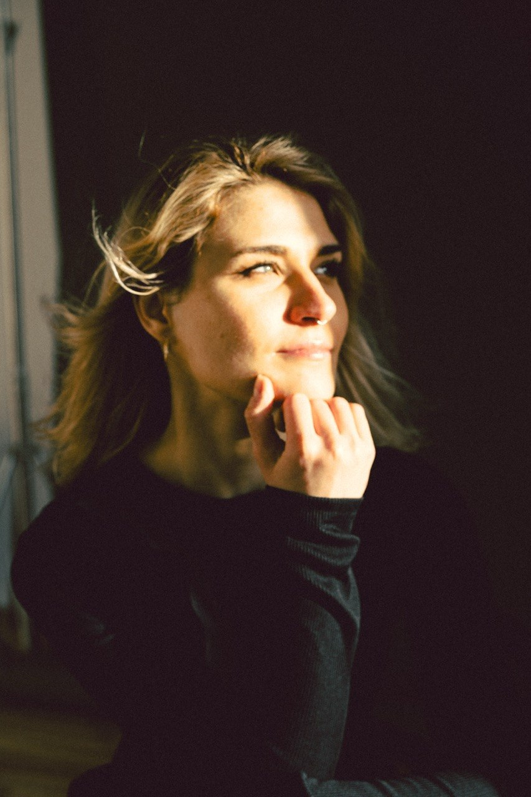
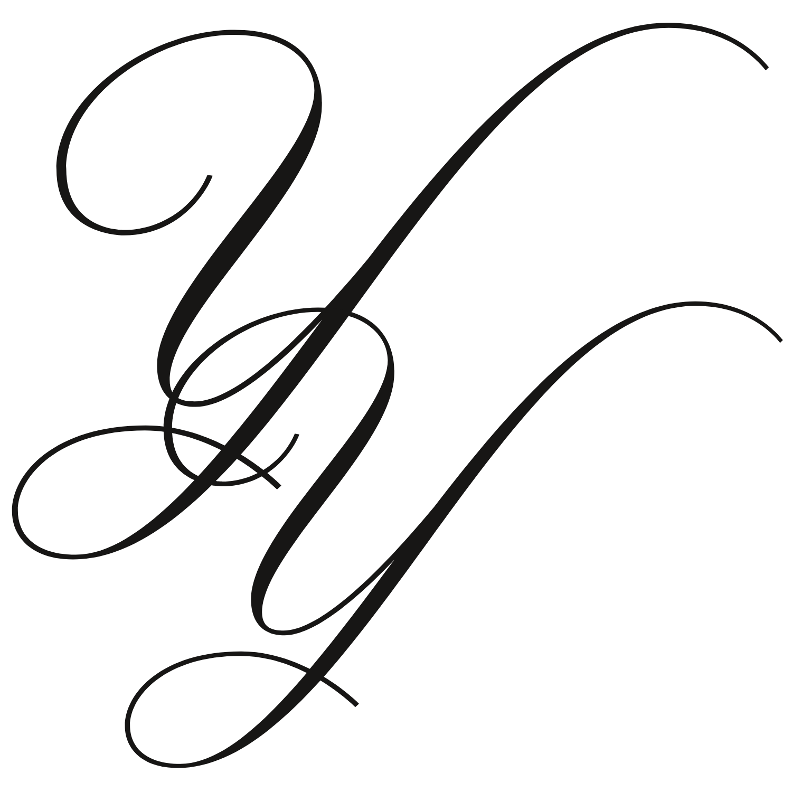
Yana Yermolonok
психолог
01
Безпечний
простір
Підтримуючий простір, де можна бути собою, говорити про складне, проживати емоції та поступово відновлювати внутрішню опору.
Детальніше02
Гештальт
терапія
Робота з емоціями, тілом, потребами та внутрішніми процесами через гештальт-підхід і тілесно-орієнтовані інструменти.
Підхід03
Індивідуальна
робота
Працюю з тривогою, депресивними станами, співзалежністю та залежною поведінкою, допомагаючи знайти більше стабільності.
ЗаписатисьYana Yermolonok
психолог
Про мене
Я - Яна Єрмольонок, клінічний психолог у гешталь-напрямку. У роботі використовую інструменти тілесно-орієнтованої терапії та маю спеціалізацію із залежної поведінки.
Для мене важливо створювати безпечний і підтримуючий простір, у якому клієнт може будувати довіру, краще розуміти себе та поступово покращувати якість свого життя.
2+ роки
практичного досвіду
опора
довіра
контакт
присутність
усвідомлення
прийняття
опора
довіра
контакт
присутність
усвідомлення
прийняття
опора
довіра
Напрямки роботи
З чим можна
прийти в терапію
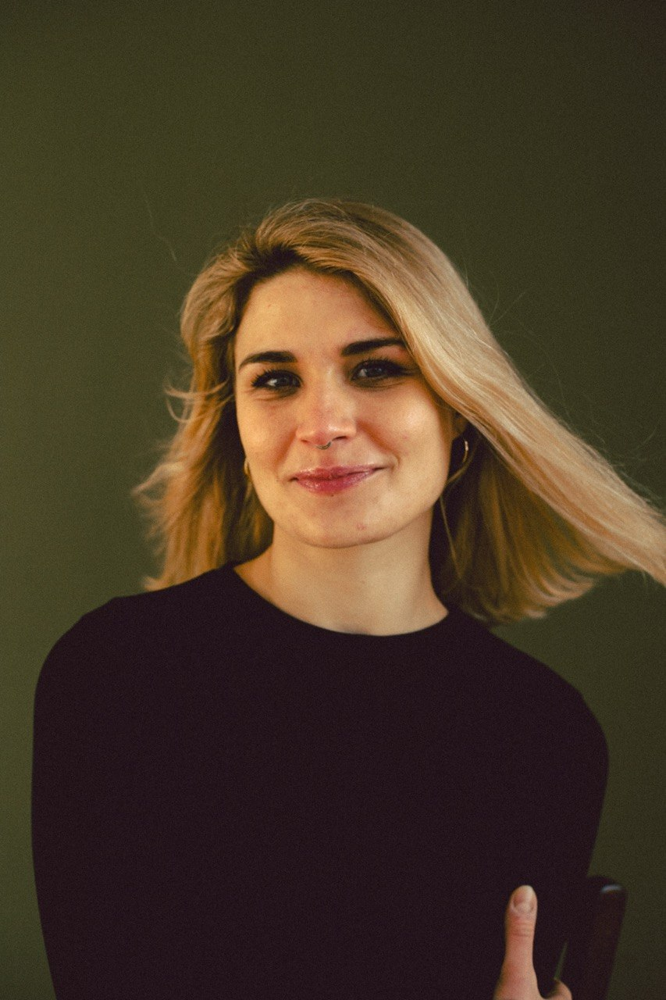
Вигорання та втома
Професійне й емоційне вигорання, хронічна втома, втрата ресурсу, відчуття виснаження та складність відновити сили.
Пошук себе
Самовизначення, криза сенсів, зміна кар’єри, періоди внутрішньої розгубленості та потреба зрозуміти, куди рухатися далі.
Стосунки та розрив
Труднощі у стосунках, переживання розставання або розлучення, біль втрати, пошук нових опор і повернення цінності себе.
Тривога і депресивні стани
Тривожні стани, страхи, депресивні переживання, внутрішня напруга, порожнеча та складність бути в контакті з життям.
Самооцінка
Невпевненість у собі, проблеми із самооцінкою, складність відчувати власну цінність, потреби та особисті кордони.
Кризи та травматичний досвід
Переживання кризових ситуацій, робота з психологічними травмами, складними подіями та досвідом, який потребує підтримки.
Залежності та співзалежність
Робота із залежностями, співзалежними стосунками, повторюваними сценаріями та поведінкою, що впливає на якість життя.
Yana Yermolonok
психолог
Як я працюю
Розуміння сучасного темпу життя
Я знаю, що таке високі навантаження, синдром самозванця, постійний стрес, тиск дедлайнів і життя в режимі «треба на вчора». Допомагаю не втратити себе у цьому темпі.
Глибока робота через тіло
Поєдную психологію, тілесні практики, дихання та досвід йоги. Ми вчимося помічати, де в тілі живуть тривога, стрес, напруга чи невиплакані емоції і бережно працювати з цим.
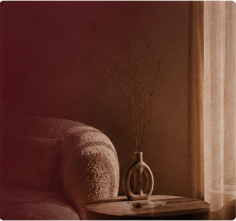
03Безпечний та живий простір
Я сама проходила через вигорання, кризу зміни професії та адаптацію до невизначеності. На сесіях немає місця засудженню, можна бути будь-якими та поступово знаходити нові опори.
опора
довіра
контакт
присутність
усвідомлення
прийняття
опора
довіра
контакт
присутність
усвідомлення
прийняття
опора
довіра
Yana Yermolonok
психолог
Мій шлях
у професію
Мій шлях у професію не був простим, і саме це дає мені змогу глибоко розуміти кризи, через які проходять мої клієнти.
Я знаю, що таке кардинально змінити життя, коли здається, що земля йде з-під ніг.
7 років в IT та пошук себе
Понад сім років я працювала програмісткою в IT-сфері. Зовні все виглядало успішно, але всередині я постійно відчувала: це не моє. Вигорання, втрата сенсу та бажання працювати з людьми стали початком мого нового шляху.
Точка трансформації
Криза, зміни та невизначеність відкрили двері до нового життя. Спершу спорт, фітнес і йога, а згодом — крок назустріч мрії стати психологом.
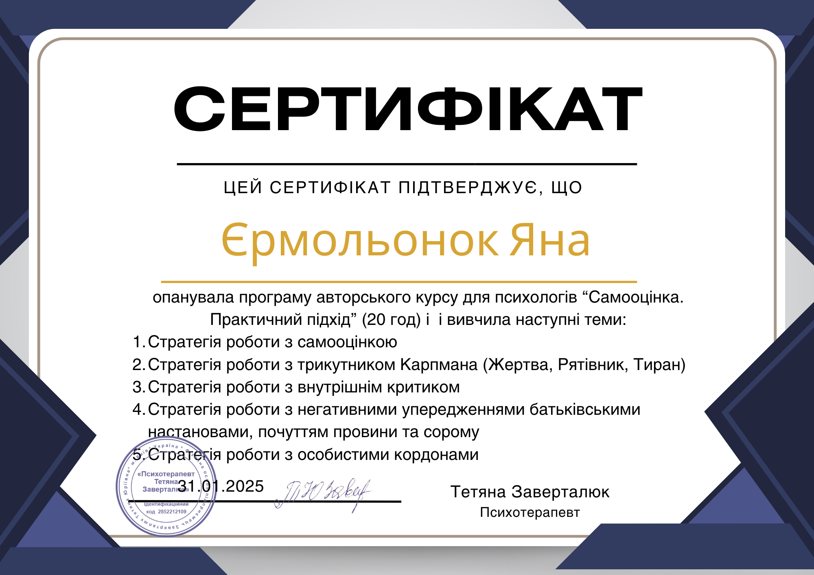
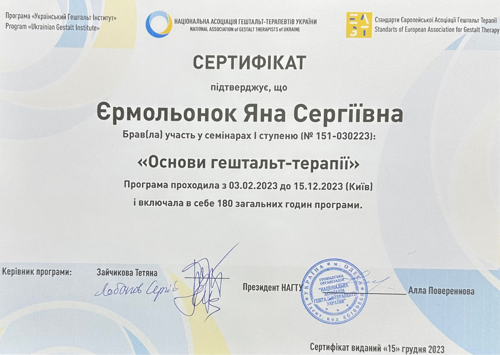
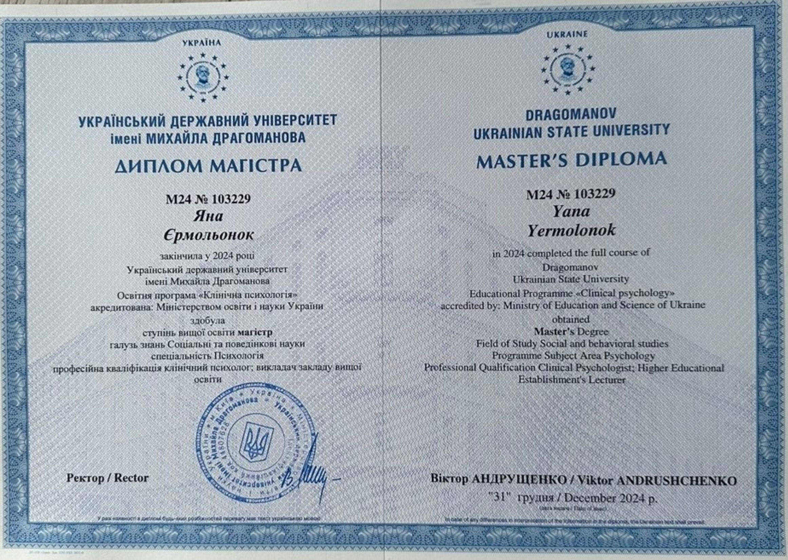
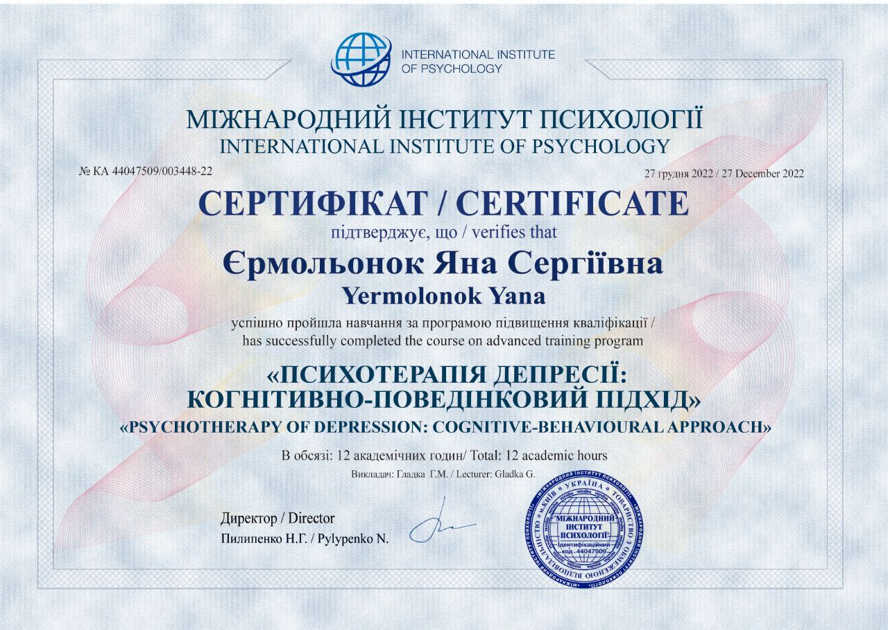
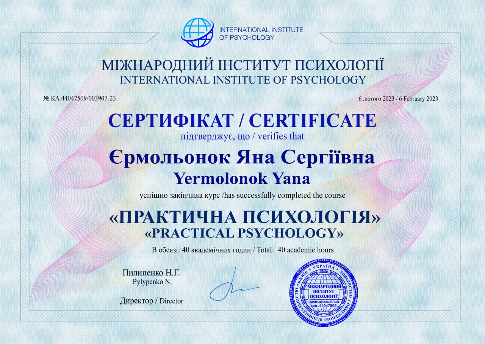
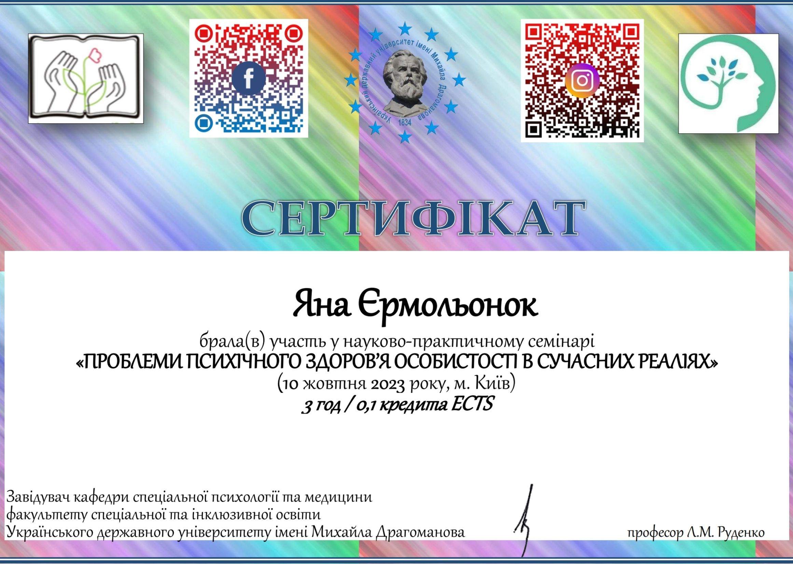
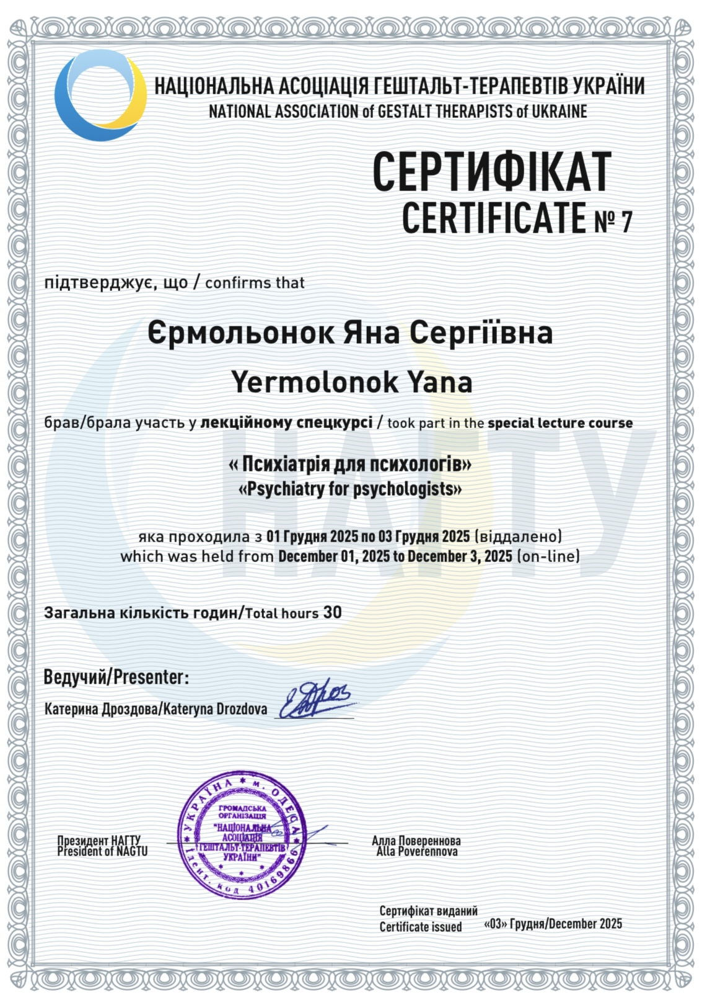
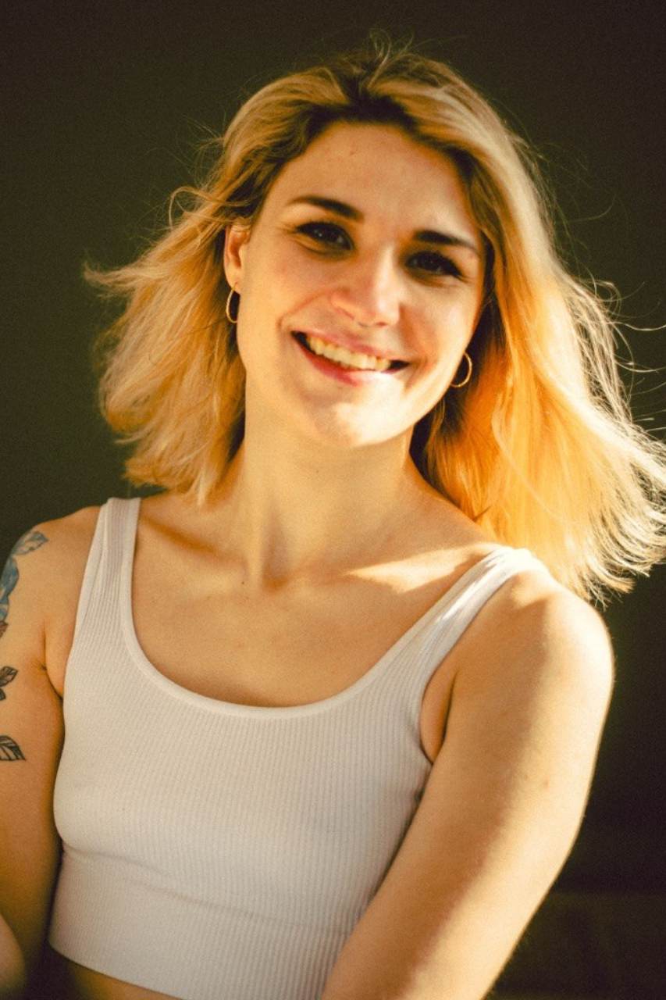
перший крок до себе
Готові почати
свій шлях?
Перша зустріч — це можливість безпечно познайомитись, сформулювати запит і відчути, чи підходить вам формат роботи.
Записатись на консультаціюYana Yermolonok
психолог
Питання перед
першою зустріччю
Відповіді на те, що зазвичай хвилює перед початком терапії: формат, тривалість, перша сесія та відчуття безпеки.
Перша зустріч — це знайомство, простір для вашого запиту та можливість зрозуміти, чи підходить вам формат роботи. Ми не поспішаємо і рухаємось у комфортному темпі.
З тривогою, вигоранням, депресивними переживаннями, кризами, труднощами у стосунках, співзалежністю, самооцінкою та пошуком себе.
Зазвичай індивідуальна консультація триває 50 хвилин. Цього достатньо, щоб бережно дослідити актуальний стан і не перевантажити процес.
Так, консультації можуть проходити онлайн. Важливо лише, щоб у вас був спокійний простір, де можна говорити вільно та без зайвої напруги.
Це нормально. На першій зустрічі не потрібно бути готовими до всього одразу. Можна прийти з розгубленістю, тишею, сумнівами — і ми будемо поступово знаходити слова разом.
опора
довіра
контакт
присутність
усвідомлення
прийняття
опора
довіра
контакт
присутність
усвідомлення
прийняття
опора
довіра